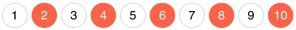

Створити проект
- Створити на коп'ютері папку з назвою проекта
- Відкрити цю папку за допомогою VSC
- Створити в VSC в цій папці файл index.html
- Відкрити файл index.html зажати клавішу Shift і натиснути 1 потім Enter
Як додати CSS до проекту
-
1) Створити на коп'ютері папку з назвою проекта
2) Відкрити цю папку за допомогою VSC
3) Створити в VSC в цій папці файл index.html
4) Створити в VSC в цій папці файл style.css
5) Відкрити файл index.html зажати клавішу Shift і натиснути 1 потім Enter
6) В файлі index.html в частині "head" прописуємо "< link rel="stylesheet" href="./тут вибираємо наш файл (style.css)" />"
Приклад:
< head>
< meta charset="UTF-8" />
< meta http-equiv="X-UA-Compatible" content="IE=edge" />
< meta name="viewport" content="width=device-width, initial-scale=1.0" />
< link rel="stylesheet" href="./style.css" />
< title>Конспект-ІТ
< /head>
Скелет HTML-документа
< ! DOCTYPE html >
--- це не тег, а обов'язкова інструкція оголошення типу документа. Вона потрібна для того, щоб повідомити браузеру, в якій версії HTML написаний документ.
< html lang="uk">
--- Кореневий елемент документа як контейнер, який містить в собі увесь вміст сторінки. Все, що знаходиться за його межами, не сприймається браузером як HTML-код і не обробляється.
Атрибут lang вказує, якою мовою написаний текст сторінки.
< head>
Призначений для зберігання службової інформації про сторінку: заголовок, опис, кодування тощо. Вся ця інформація не відображається у вікні браузера, однак, містить дані, які вказують браузеру, яким чином потрібно обробляти сторінку.
< meta charset="utf-8" />
utf-8 - найпоширеніше кодування
Тег < meta > використовується для зберігання інформації, призначеної для браузера і пошукових систем
< meta name="description" content="Вивчення основ HTML5 для новачків" />
Короткий опис змісту допомагає пошуковим системам краще проіндексувати сторінку. (Щоб краще шукало сторінку в гоогл)
< title>HTML5 - це просто!< / title>
Заголовок сторінки, відображається у вкладці браузера. Довжина заголовка повинна бути не більше 60 символів, щоб повністю поміститися у заголовку. Текст заголовка повинен містити короткий опис вмісту веб-сторінки.
ЩОБ ДОДАТИ ШРИФТИ CSS АБО ЩО-НЕБУДЬ ІНШЕ ДОДАЄМО ТУТ ТЕГ: < link>
ТУТ ЗНАХОДИТЬСЯ ВЕСЬ КОД ПРОЕКТУ
< header> < /header>
< main> < /main>
< footer> < /footer>
Тип елементів
-
Ховаємо елементи
display: none
Значення display: none дозволяє повністю приховати елемент, звільнивши його простір для інших. Такий елемент вилучається з потоку документа, візуально ховається і не бере участі у розмітці сторінки.
-
Блоковий елемент
Блоковий елемент (display:block) - займає повністю увесь рядок, незалежно від обсягу його контенту, тому кілька блокових елементів візуально йдуть один за одним зверху вниз.
Блокові HTML тегиБлокові використовуються для розмітки текстових контейнерів (заголовок, список, абзац) і великих смислових розділів (секція, шапка, підвал).
Для них задана властивість display: block.
Вони займають всю доступну ширину рядка (простір за горизонталлю) всередині батька.
Їх висота визначається вмістом, якщо явно не задана у властивості height.
Вони завжди починаються з нового рядка, тому кілька сусідніх блокових елементів розташовані вертикально один під одним.
Їм можна задавати будь-які властивості геометрії елемента: ширину, висоту, поля, рамки і відступи.Фіксована ширина
Навіть якщо ширина блокових елементів задана явно, вони все одно будуть розташовуватися вертикально один під одним. Все вільне місце в рядку за замовчуванням займається автоматичним правим відступом (margin-right) елемента.
-
Рядковий елемент
Рядковий елемент (display:inline) - займає місце по своєму вмісту, тому кілька малих елементів можуть розташовуватися на одному рядку. Якщо в рядку не вистачає місця для вміщення рядкового елемента, він переноситься на новий рядок.
Рядкові HTML тегиРядкові елементи призначені для виділення і оформлення текстового контенту. Наприклад посилання, кнопка, зображення тощо.
Для них задана властивість display: inline.
Їх ширина і висота залежать тільки від вмісту, явно задати їх не можна. Тобто властивості width і height не мають жодного ефекту.
Вони розташовуються в рядку доти, доки в ньому є достатньо місця, після чого нові переносяться на наступний рядок.
Їм можна задавати тільки горизонтальну геометрію: ліві і праві поля, відступи і рамки. Тобто вони ігнорують значення верхніх і нижніх margin, padding і border.
Проміжок у рядкових елементів
У рядкових і рядково-блокових елементів є правий або, у разі зображень, нижній проміжок. Це не margin або padding, а буквально порожнє місце - особливість того, як браузер розташовує рядковий контент в рядку.
Як прибрати нижній проміжок у зображення.
.image {display: block;}
Особливості вертикальних полів і рамок
Верхні і нижні поля, а також рамки рядкового елемента працюють дуже дивно - не збільшують розмір блоку, але візуально відображаються.
Візуально фон заповнив вертикальні поля і рамки, які «залазять» на сусідні рядки абзацу та поводяться дуже дивно. Це особливість відображення в браузері, вони жодним чином не впливають на геометрію сусідніх елементів, і тому не використовуються.
-
Рядково-блокові елементи (inline-block)
Гібрид між блоковими і рядковим елементами, який взяв все найкраще від обох.
Вони використовуються у тих випадках, коли рядковим елементам потрібно додати декоративні ефекти. Наприклад, задати посиланню вертикальні поля, відступ або ширину з висотою, візуально зробивши з неї кнопку, або перетворити в іконку з фіксованими розмірами.
Для них задана властивість display: inline-block.
Їх ширина і висота залежать від вмісту, але можна явно задати властивості width і height.
Вони розташовуються в рядку доти, доки в ньому є достатньо місця, після чого нові переносяться на наступний рядок.
Їм можна задавати будь-які властивості геометрії елемента: ширину, висоту, поля, рамки і відступи. -
Flexbox
FLEXBOX FROGGY Детальнішеце CSS-модуль, який визначає набір властивостей для розміщення, вирівнювання і розподілу простору між елементами в контейнері, навіть якщо їх розмір невідомий або динамічний.
Основна ідея полягає в тому, щоб розділити елементи на блок-контейнер (flex-контейнер) і його дітей (flex-елементи).
Flexbox-контейнер може змінювати ширину і висоту його дітей, а також напрямок їх розташування - вирівнювання в колонку або рядок, порядок відображення елементів і відстань між ними. Контейнер розширює елементи, щоб найоптимальніше заповнити доступний простір, або стискає їх, щоб запобігти переповненню.
Елементи втрачають «тип», перестають бути рядковими або блоковими.
Блокові елементи перестають розташовуватись вертикально один під одним.
Крайні відступи на стику з межею батька не випадають.
Вертикальні відступи елементів не схлопуються.
Працюють автоматичні вертикальні відступи.
-
Термінологія
main axis
головна вісь flex-контейнера, вздовж якої розташовуються елементи. Вона не обов'язково горизонтальна, її напрямок контролюється властивістю flex-direction.
main-start і main-end
елементи в контейнері завжди розташовуються від main-start (початок головної осі) і до main-end (кінець головної осі).
cross axis
поперечна вісь, яка завжди перпендикулярна до головної осі. Її напрямок залежить від головної осі і явно не встановлюється.
cross-start і cross-end
початок і кінець поперечної осі, вздовж якої розташовуються рядки елементів.
-
Властивості контейнера display:
display: flex | inline-flex
Створює flex-контейнер, блоковий або рядково-блоковий, залежно від заданого значення, і встановлює flex-контекст для всіх дітей (не нащадків) контейнера, перетворюючи їх у flex-елементи.
display: flex
блоковий
display: inline-flex
рядково-блоковий
-
розташування елементів в одному певному напрямку - горизонтально або вертикально.
flex-direction: row | row-reverse | column | column-reverse;
-
Управляє позиціонуванням елементів на головній осі від main-start до main-end.
justify-content: flex-start | flex-end | center | space-between | space-around | space-evenly
-
Управляє розташуванням елементів вздовж поперечної осі.
align-items: stretch | flex-start | flex-end | center | baseline


-
Властивість flex-wrap дозволяє перетворити однорядковий контейнер у багаторядковий.
flex-wrap: nowrap | wrap | wrap-reverse

-
Управляє вирівнюванням всіх рядків багаторядкового контейнера вздовж поперечної осі, якщо є вільне місце.
align-content: flex-start | flex-end | center | space-between | space-around | space-evenly | stretch

-
Задає відступи між колонками та рядками
gap:
Flexbox Властивості елемента
Flex-елементи - це діти flex-контейнера, елементи першого рівня вкладеності. Flex-елементи (далі просто елементи) перестають підкорятися стандартному потоку документа, втрачають свій тип (блоковий, рядковий тощо) і дотримуються правил позиціонування Flexbox-моделі.
-
Визначає початковий розмір елемента перед розподілом вільного простору.
flex-basis: auto | значення
Якщо вказані обидві властивості, flex-basis і width, то властивість width ігнорується.
Властивість flex-basis - це не фінальний розмір елемента, а розмір до розподілу вільного простору.
Властивості min-width і max-width працюють як обмежувачі розміру елемента, навіть якщо у нього вказаний flex-basis, а не width.
Властивість flex-basis може визначати висоту, а не ширину елемента. Це відбувається у разі, якщо головна вісь - вертикальна.
-
Визначає здатність елемента, у разі потреби, займати більше місця (рости), ніж його початковий розмір.
flex-grow: частка
За замовчуванню у всіх елементів встановлено значення 0, тобто елементи не намагаються зайняти додаткове вільне місце, навіть якщо таке є. Від'ємні значення задавати не можна.
Наприклад, якщо у всіх елементів встановлено однакове значення цієї властивості, то вони займуть однакову кількість місця в контейнері. А ось, якщо всім задати значення 1, а одному елементу 2, то він спробує зайняти в два рази більше місця, ніж будь-який інший елемент.
Ще один частий випадок застосування властивості flex-grow - картка з «футером» притиснутим до її низу, незалежно від обсягу контенту.
Ця техніка складається з двох кроків.
.card {display: flex;
flex-direction: column; }
.card > .content {flex-grow: 1;}
-
Визначає здатність елемента, у разі потреби, займати менше місця (стискатися), ніж його початковий розмір.
flex-shrink: частка
За замовчуванням у всіх елементів встановлено значення 1, тобто елементи будуть стискатися у разі потреби. Від'ємні значення задавати не можна.
-
Дозволяє елементу змінити своє положення на поперечній осі, перевизначивши для себе значення властивості align-items від контейнера. Аналогу для головної осі не існує, елемент може змістити себе тільки на поперечній осі.
align-self: auto | flex-start | flex-end | center | baseline | stretch

-
Використовуючи властивість order можна візуально змінити порядок розташування елементів вздовж головної осі. При цьому, в HTML-коді нічого не зміниться.
order: позиція

-
Позиційовані елементи
За замовчуванням елементи на сторінці розташовуються зліва направо і зверху вниз. А як зробити напис на зображенні товару, показати один елемент поверх іншого при ховері або змусити меню завжди бути прикріпленим до верхньої частини в'юпорту, навіть під час скролу? Для вирішення подібних завдань існує властивість position, що дозволяє буквально підняти елемент і розмістити його поверх будь-якого іншого.

-
Змінює тип позиціонування елемента.
position: static | relative | absolute | fixed | sticky | inherit
Для зазначення положення елемента використовуються властивості top, left, bottom або right, які застосовуються до елементів без position.
-
Відносне позиціонування
елемент залишається в потоці сторінки, тобто сусідні елементи не займають його місце. Проте, візуально елемент можна зсунути щодо його оригінального положення, водночас він може перекривати сусідів.
Властивості top, left, bottom і right дозволяють вказати зміщення елемента (візуальне) щодо його вихідного положення. Можуть приймати від'ємні значення.


-
Абсолютне позиціонування
Під час використання абсолютного позиціонування елемент виривається з потоку сторінки, тобто сусідні елементи займають його місце. Відлік значень top, left, bottom і right для абсолютно позиційованого елемента ведеться щодо найближчого предка з позиціонуванням, відмінного від статичного. Якщо такого предка не буде, то відлік буде здійснюватися від меж елемента < body>.

-
Фіксоване позиціонування
У разі фіксованого позиціонування, елемент вилучається з потоку сторінки і позиціонується щодо в'юпорту (вікна браузера). Це створює ефект фіксації елемента в певному місці екрану при прокручуванні сторінки.
Фіксоване позиціонування використовується для закріплених хедерів з навігацією, спливаючих вікон, чатів з менеджером на сторінках інтернет-магазинів тощо.
-
Липке позиціонування
Липке позиціонування (sticky) - це ніби комбінація властивостей relative і fixed.
Доки елемент знаходиться у своєму контейнері і контейнер не покидає область видимості під час вертикальної прокрутки - елемент поводить себе ніби позиціонується щодо (relative).
Щойно частина батьківського контейнера залишає зону видимості, елемент фіксується на сторінці доти, доки хоча б якусь частину контейнера видно на екрані.
Якщо весь контейнер покине зону видимості, то знову увімкнеться поведінка як під час відносного позиціонування - елемент зникне з екрану одразу після контейнера.Для реалізації липкого позиціонування необхідні всього три умови:
У липкого елемента повинно бути встановлено позиціонування position: sticky.
У липкого елемента повинно бути встановлено положення, наприклад top: 0.
Елемент-контейнер повинен бути більшим по висоті за липкий елемент. -
задає властивість z-index, яке контролює глибину (порядок) позиціонованих елементів на сторінці по осі z - від очей користувача і до екрану.
Властивість z-index
Що більше значення z-index, то вище розташовується елемент.
.box:nth-child(2) { z-index: 1;}
-
управляє тим, як поводиться вміст елемента, якщо його розмір перевищує допустиму довжину або ширину.
overflow: visible | hidden | scroll | auto
visible - видимий переповнюючий вміст. Значення за замовчуванням.
hidden - все, що виходить за межі блоку, буде візуально приховане.
scroll - у разі переповнення з'являються горизонтальна і вертикальна смуги прокручування, навіть якщо потрібна тільки одна.
auto - схоже на значення scroll, але смуги прокручування показуються тільки там, де вони дійсно необхідні, а не всі відразу.Значення visible
Якщо не вказати властивість overflow, то за замовчуванням встановлюється значення visible і, у разі переповнення, вміст буде відображатися за межами блоку.
Значення hidden
Протилежне значення visible. У цьому випадку будь-який переповнюючий вміст, який виходить за межі елемента, не відображається.
Пам'ятайте, що у цьому випадку переповнюючий контент недоступний і прихований від користувача. Саме тому ми ніколи не задаємо фіксовану висоту текстовим блокам.
Значення scroll
Якщо встановлене значення scroll, переповнюючий вміст буде прихований, але з'являться скроллбари, щоб була можливість переглянути увесь контент. Водночас будуть показані обидва скроллбари - горизонтальний і вертикальний, навіть якщо потрібен тільки якийсь один.
Значення auto
Значення auto схоже на значення scroll, за винятком того, що показуються тільки ті смуги прокручування, які дійсно необхідні.
-
Заокруглене зображення
Зображення поводяться таким чином, що візуально виходять за межі блоку, якщо їх розмір більший. Ця особливість спливає у прийомі заокруглення рамок зображення. Зображення обгортається в «тумбу», якій задаються стилі рамки та її радіуса. На допомогу приходить властивість overflow та її значення hidden, яке задається «тумбі» і контролює видимість переповнюючого контенту.
* { box-sizing: border-box;}
img { display: block; max-width: 100%;}
.thumb { border: 10px solid green; border-radius: 50px; width: 480px; overflow: hidden;}

-
Декоративний оверлей (ВИЇЖАЮЧЕ ВІКНО)
Властивість overflow зі значенням hidden використовується під час створення декоративних ефектів з появою прихованого контенту через межі блоку.
-
Спочатку абсолютно позиціонуємо div.overlay щодо div.box і розтягуємо його на всю ширину і висоту div.box.
.box {position: relative;}
.overlay {
position: absolute;
top: 0;
left: 0;
width: 100%;
height: 100%;
} -
Використовуючи властивість transform і translateX, зміщуємо div.overlay вліво на 100% його ширини.
.overlay {
position: absolute;
top: 0;
left: 0;
width: 100%;
height: 100%;
transform: translateX(-100%);
} -
При ховері по div.box, використовуючи transform і translateX, повертаємо div.overlay у початкове положення.
.box:hover .overlay { transform: translateX(0);}
-
Задаємо div.box властивість overflow зі значенням hidden, щоб візуально приховати div.overlay, коли той зміщений за межі div.box.
.box { position: relative; overflow: hidden;}
-
Додаємо div.overlay перехід для анімації властивості transform.
.overlay {
position: absolute;
top: 0;
left: 0;
width: 100%;
height: 100%;
transform: translateX(-100%);
transition: transform 250ms ease;
}
Такий ефект реалізується за допомогою кількох простих кроків.
< div class="box">
< div class="overlay">< /div>
< /div> -
-
Корисні штуки
-
Селектор дитини (Вибираємо всі елементи першої вкладеності)
.main-block__body > *:not(:last-child) { margin: 0 0 35px 0}
Маємо ul/li/ul/li*3 потрібно звернутись до першої вкладеності до li
НЕ ПРАВИЛЬНО .menu li {}
ПРАВИЛЬНО .menu > li {}
-
Селектор атрибута (Дозволяє застосувати стилі до елементів з певним атрибутом або його значенням. в css)
a[title]
Вибере всі посилання з атрибутом title.
a[title] {color: teal}
a[href="https://www.youtube.com"]
Вибере всі посилання з атрибутом href і відповідним значенням.
a[href="https://www.youtube.com"] {color: teal}
-
перенесення рядка.
< br >
Описмалює горизонтальну лінію.
< hr >
Описстворює рядок, що біжить на сторінці.
< marquee >
Описзмінити вигляд курсора при наведенны на елемент
cursor: pointer;
Опис
Псевдокласи стану
-
Псевдокласи стану
:hover
Активується, коли курсор миші знаходиться в межах елемента, наприклад, при наведенні миші на посилання або будь-який інший елемент.
.link:hover {color: tomato}
:focus
Активується, коли інтерактивний елемент (посилання, кнопка, поле форми) отримує фокус під час навігації по сторінці клавіатурою (клавішею Tab).
.link:focus {color: tomato}
:active
Відбувається під час активації елемента. Наприклад, посилання стає активним, якщо навести на нього курсор і клацнути мишкою. Незважаючи на те, що активним може стати практично будь-який елемент, псевдоклас :active використовується в основному для посилань і кнопок.
.link:active {color: red}
:visited
Цей псевдоклас активується на посиланнях, які вже були відвідані. За замовчуванням посилання відображаються синіми і після відвідування стають фіолетовими.
.link:visited {color: green}
Ховер в таблиці
.schedule-body > tr:hover {background-color: tomato; color: white}
Псевдоелементи
Псевдоелементи ::before і ::after використовуються для додавання декоративних ефектів (іконок, плашок, оверлеїв) без необхідності створення додаткових порожніх тегів в розмітці.
За замовчуванням це рядкові елементи. Для того щоб задати псевдоелементу вертикальну геометрію, необхідно змінити його тип на блоковий або, здебільшого, на рядково-блоковий.
-
створює псевдоелемент перед усім контентом елемента (на початку).
::before
.box::before {/* стилі псевдоелемента before */}
-
створює псевдоелемент після всього контенту елемента (в кінці).
::after
.box::after {/* стилі псевдоелемента after */}
-
обов'язкова властивість
content: '';
Ця обов'язкова властивість дозволяє додати текстовий контент всередину псевдоелемента. Навіть, якщо текстовий контент не потрібен, його значенням необхідно поставити порожній рядок, інакше браузер просто не створить псевдоелемент.
.box::before {content: 'Це текст в ::before'; font-size: 40px; color: orange;}
Структурні псевдокласи
-
Дозволяють вибрати перший елемент в колекції сусідів.
:first-child
Дозволяють вибрати перший або останній елемент в колекції сусідів. Наприклад, якщо кожному елементу списку задати нижній відступ, то він буде і в останнього. Крайню геометрію необхідно обов'язково чистити, тому що такі відступи можуть неочевидно випадати або розширювати батька.
.list-item:last-child { margin-bottom: 0;}
-
Дозволяють вибрати останній елемент в колекції сусідів.
:last-child
Аналогічно працює :first-child, застосовуючи стилі до першого елемента в колекції сусідів. Наприклад, коли потрібно задати верхній відступ всім елементам, крім першого.
.list-item:first-child { margin-top: 0;}
-
Дозволяє вибрати всі елементи, які не задовільняють критерій - простий селектор записаний в дужках.
:not(selector)
Простий селектор - це універсальний селектор, селектор типу, ідентифікатора, атрибута, класу або псевдокласу.
.list-item:not(:last-child) { margin-bottom: 12px;}
-
Вибирає елементи в колекції сусідів за номером, зазначеним в дужках, за допомогою циклу an+b, який дозволяє задати правило для послідовності елементів.
:nth-child(an+b)
a - період циклу. Довільне число.
n - лічильник циклу. Починається з нуля і збільшується на одиницю на кожній ітерації.
b - зміщення. Довільне число.
-
N-й елемент
У найпростішому випадку можна передати буквально номер елемента колекції.
.list-item:nth-child(5) { background-color: orange;}

-
Парні і непарні елементи
Для вибору всіх парних елементів можна використовувати формулу 2n або її псевдонім - значення even - зарезервоване слово.
.list-item:nth-child(2n) {background-color: orange;}
.list-item:nth-child(even) { background-color: orange;}
Для вибору непарних елементів можна використовувати формулу 2n + 1 або її псевдонім - значення odd - зарезервоване слово.
.list-item:nth-child(2n + 1) {background-color: orange;}
.list-item:nth-child(odd) { background-color: orange;}
-
Від N-го елемента
Якщо задати a = 1, то результуюча формула n + b дозволяє вибрати всі елементи, починаючи з елемента під номером b.
.list-item:nth-child(n + 6) { background-color: orange;}

-
До N-го елемента
Якщо задати a = -1, то результуюча формула -n + b дозволяє вибрати всі елементи, починаючи з першого і до елемента під номером b.
.list-item:nth-child(-n + 5) {background-color: orange;}
-
Кожен N-й елемент
Наприклад, для того щоб вибрати кожен 3-й елемент, починаючи з першого, використовуємо цикл an+b, в якому a = 3, а зміщення - b = 1.
.list-item:nth-child(3n + 1) {background-color: orange;}
-
Аналог :nth-child() з відмінністю у тому, що відлік ведеться з кінця колекції (Останнього елемента).
:nth-last-child(an+b)
Аналогічно працює :first-child, застосовуючи стилі до першого елемента в колекції сусідів. Наприклад, коли потрібно задати верхній відступ всім елементам, крім першого.
-
N-й елемент
Виберемо 3-й елемент з кінця, тобто 8-й, тому що всього 10-ть елементів. Якби всього було 20-ть елементів, тоді був би обраний 18-й тощо.
.list-item:nth-last-child(3) { background-color: orange;}

-
До N-го елемента
Щоб вибрати кілька останніх елементів в колекції, використовується формула -n + b, де b - це кількість елементів, що вибираються.
.list-item:nth-last-child(-n + 3) {background-color: orange;}
-
Додаткові псевдокласи
- :first-of-type - вибирає перший селектор цього типу.
- :last-of-type - вибирає останній селектор цього типу.
- :only-of-type - вибирає елемент, який є єдиною дитиною такого типу в колекції сусідів.
- :nth-of-type(an+b) - вибирає номер селектора, використовуючи формулу an+b.
- :nth-last-of-type(an+b) - аналог :nth-of-type() з відмінністю у тому, що відлік ведеться з кінця колекції (останнього елемента).
- :only-child - вибирає елемент, який є єдиною дитиною з таким селектором в колекції сусідів.
- :empty - вибирає порожні елементи, тобто без нащадків і тексту.
Велечина шрифту
- Thin - 100
- ExtraLight - 200
- Light - 300
- Regular - 400
- Medium - 500
- SemiBold - 600
- Bold - 700
- ExtraBold - 800
- Black - 900
Розмітка тексту
ВСІ ТЕГИ-
Теги
< dl >
це контейнер для списку пар термінів та їх описів, тобто словник. Для розмітки термінів існує тег < dt >, а для описів - < dd >. Використовується для розмітки списку визначень, наприклад для створення глосарію, телефонного довідника тощо.
< span >
Універсальний контейнер для дрібного текстового контенту, наприклад окремих слів, частин слів або цілих фраз всередині текстового масиву.
< pre >
За замовчуванням браузер ігнорує перенесення рядків і більше одного пробілу підряд. Цей тег дозволяє додати переформатований текст з примусовими перенесеннями рядків. Наприклад, розмітка тексту пісні або вірша.
< sup >
< sub >
Призначені для відображення символів у верхньому (< sup>, скорочено від superscript) і нижньому (< sub>, скорочено від subscript) індексі. Наприклад, для розмітки нескладних математичних або хімічних формул.
< time >
< datetime >
Дату і час можна написати просто текстом, але краще використовувати спеціальний тег < time>. Дата для людини - це текст всередині тегу, а для машини - значення атрибута datetime у форматі ISO 8601.
Останні новини на < time datetime="2019-12-14">14 грудня 2019 року< /time>.
< address >
Призначений для зберігання контактної інформації
< strong >
семантично підкреслює текст як важливий і вказує, що це важливе слово або фраза.
< b >
робить текст тільки візуально жирним
< em >
семантично виділяє текст, на який зроблений особливий акцент, що змінює зміст фрази. Наприклад, можна виділити сарказм.
< i >
робить текст тільки візуально курсивним
CSS
Нормалізація стилів
-
підключення файлу стилів
< link rel="stylesheet" href="https://cdnjs.cloudflare.com/ajax/libs/modern-normalize/1.0.0/modern-normalize.min.css" />
в різних браузерах елементи можуть виглядати дещо інакше. Нормалізація стилів - це спроба вирішити цю проблему, шляхом підключення ще одного файлу стилів, в якому виправлені всі можливі розбіжності між таблицями стилів браузерів. Все що необхідно зробити - це підключити ще один файл стилів перед усіма вашими стилями.
Специфічність селектора
-
Селектори 4-го рангу
Специфічність - 0 0 0 1
p { color: green}
Специфічність - 0 0 0 2
article > p {color: orange}
-
Селектори 3-го рангу
Специфічність - 0 0 1 0
.post-title {color: green}
Специфічність - 0 0 1 1
.post > h1 {color: red}
Специфічність - 0 0 2 0
.post > .post-title {color: orange}
Специфічність - 0 0 2 1
.post > a.post-title {color: orange}
-
Селектори 2-го рангу
Специфічність - 0 1 0 0
#title {color: orange}
-
Селектори 1-го рангу
Специфічність - 1 0 0 0
< p style="color: green;"> < /p>
-
Специфічність правила можна підвищити за допомогою ключового слова
!important
p {color: orange !important}
CSS-змінні
-
Оголошення змінної
:root {--brand-color: #3f51b5}
-
Використання змінної
.section-title {color: var(--brand-color)}
-
Резервні значення
.section-title {color: var(--brand-color, black)}
Функція var(ім'я_змінної, фолбек) може приймати два значення. Другий аргумент - це фолбек - значення, яке буде використовуватися, якщо змінна, яка передана першим аргументом, не визначена.
Робота з кольором
-
Колір тексту
color: колір | inherit
color:red (червоний)
color: inherit (наслідує колір батька)
-
Колір фону
background-color: колір | transparent | inherit
.text {background-color: red} (колір фону червоний)
.text {background-color: inherit} (Успадковує значення батька.)
.text {background-color: transparent} (Встановлює прозорий фон.)
-
Прозорість кольору
p {background-color: rgba(255, 0, 0, 0.3)}
p {background-color: rgba(100%, 0%, 0%, 30%)}
Основний спосіб додавання прозорості кольору - це функція rgba(). На відміну від rgb() ще додається прозорість (альфа канал).
Найчастіше прозорість задається числом від 0 (прозорий) до 1 (не прозорий).
Але можна і відсотками від 0% (прозорий) до 100% (не прозорий).
Оформлення тексту
-
Задає різні декоративні підкреслення та інші ефекти тексту.
text-decoration: none | underline | line-through | overline
line-through
Створює перекреслений текст .
overline
Лінія проходить над текстом.
underline
Встановлює підкреслений текст .
none
Скасовує всі ефекти, в тому числі і підкреслення у посилань, яке задано за умовчанням.
inherit
Значення успадковується у батька.
-
Управляє регістром символів робить всі літери великими або малими.
text-transform: none | uppercase | lowercase | capitalize
capitalize
Перший символ кожного слова в реченні буде заголовних. Решта символів свій вигляд не змінюють.
lowercase
Все символи тексту стають малими (нижній регістр).
uppercase
Все символи тексту стають прописними (верхній регістр).
none
Чи не змінює регістр символів.
inherit
Успадковує значення батька. -
Управляє вирівнюванням текстового вмісту елемента за горизонталлю.
text-align: center | justify | left | right | start | end
center Вирівнювання тексту по центру.
justify
Вирівнювання по ширині, що означає одночасне вирівнювання по лівому і правому краю.
left/start
Вирівнювання тексту по лівому краю.
right/end
Вирівнювання тексту по правому краю.
inherit
Успадковує значення батька.
-
Відстань між буквами
letter-spacing
letter-spacing: normal/length/initial/inherit;
-
Встановлює величину відступу першого рядка блоку тексту, наприклад абзацу. Не впливає на всі інші рядки, крім першого.
text-indent: значення | відсотки | inherit
.post-text {text-indent: 100px}
-
Встановлює міжрядковий інтервал (інтерлін'яж, висоту рядка) тексту.
line-height: множник | значення | відсотки | normal | inherit
.text {line-height: 1.5}
-
Визначає інтервал між словами.
word-spacing: значення | normal | inherit
p {word-spacing: 20px; }
Властивості шрифту
-
Задає розмір шрифту
font-size
.text { font-size: 20px;}
-
Контролює товщину (жирність, вага) літер шрифту.
font-weight
.title { font-weight: 400;}
-
Задає стиль тексту, наприклад можна зробити текст похилим.
font-style: normal | italic | oblique | initial | inherit
normal
Звичайне зображення тексту.
italic
Курсив.
oblique
Похиле накреслення. Курсив і похилий шрифт при всій їх схожості не одне і те ж.
inherit
Успадковує значення батька.
-
Сімейство використованого шрифту, задає шрифт тексту елемента.
font-family
body { font-family: 'Helvetica Neue', 'Roboto', 'Verdana', 'Tahoma', sans-serif; }
Псевдоелементи тексту
-
Управляє стилем першого символу в тексті елемента
::first-letter
елемент::first-letter {...}
-
Управляє стилем виділення тексту елемента
::selection
pre::selection {
color: #ffffff;
background-color: #3f51b5; }
Блокова модель

-
Встановлює тип блокової моделі елемента - формулу розрахунку його розмірів.
box-sizing: content-box | border-box | inherit
content-box
властивості width і height задають ширину і висоту області вмісту і не включають розміри полів (padding), меж (border) і відступів (margin).
border-box
властивості width і height задають фінальний розмір елемента і включають значення полів (padding) і меж (border), але не відступів (Margin).

inherit
наслідує значення блокової моделі предка.
-
Для того щоб не ставити властивість box-sizing кожному елементу окремо, на самому початку файлу стилів використовується наступний CSS-код.
*,
*::before,
*::after {
box-sizing: border-box;
} -
Властивість border
border: ширина стиль колір;
border: 5px solid tomato;
Існує багато стилів рамок, найпопулярніші значення - це solid, dashed і dotted.
Також існують властивості для того, щоб задати ці значення окремо.
border-width: ширина;
border-style: стиль;
border-color: колір;Індивідуальні рамки
.box {
/* Встановить стилі верхньої рамки */
border-top-width: 3px;
border-top-style: solid;
border-top-color: blue;
/* Встановить стилі правої рамки */
border-right-width: 5px;
border-right-style: dotted;
border-right-color: black;
/* Встановить стилі нижньої рамки */
border-bottom-width: 7px;
border-bottom-style: dashed;
border-bottom-color: palevioletred;
/* Встановить стилі лівої рамки */
border-left-width: 9px;
border-left-style: dashed;
border-left-color: green;
}
Закруглена рамка. Наступні властивості дозволяють закруглити кожен кут рамки окремо.
/* верхній лівий кут */
border-top-left-radius: значення;
/* верхній правий кут */
border-top-right-radius: значення;
/* нижній правий кут */
border-bottom-right-radius: значення;
/* нижній лівий кут */
border-bottom-left-radius: значення;
-
Відео та аудіо
-
Додати відео
< video > < /video>
Для розмітки відеоконтенту використовується парний тег
< video src="http://techslides.com/demos/sample-videos/small.webm"> < /video>
-
Формати відео
< source / >
Існує декілька популярних відеоформатів, які необхідно надати браузеру на вибір: webm, mp4 і ogg. Для цього прибираємо атрибут src у тегу < video> і додаємо новий тег < source> для кожного формату. В атрибуті src вказуємо адресу відеофайлу, а в атрибуті type - формат відео. Браузер вибере зі списку перший, який він підтримує і завантажить його, проігнорувавши інші.
-
Додати - Аудіо
< audio > < /audio>
< audio src="song.mp3" controls autoplay loop preload="auto">< /audio>
-
Формати аудіо
< source / >
Подібно до відео, видаляємо атрибут src і використовуємо тег < source> з атрибутами src і type.
< audio controls>
< source src="song.mp3" type="audio/mpeg" />
< source src="song.ogg" type="audio/ogg" />
< /audio>
Атрибути
-
a
target="_blank"
вказує на те, в якій вкладці відкривається сторінка після кліку на посилання
title="Пошукова система Google"
додає спливаючу підказку до тексту посилання.
rel="noreferrer noopener"
Атрибут rel доповнює атрибут href інформацією про відношення між поточним і пов'язаним документом, і використовується в парі з target="_blank"
захищає сторінку від зломуdownload="ім'я файлу"
Атрибут download="ім'я файлу" повідомляє браузеру, що зазначений ресурс не повинен відкриватися, а завантажуватися в момент, коли користувач клікне на посилання.
Атрибут можна використовувати без вказівки значення, тоді буде використано ім'я оригінального файлу.href="tel:+14251234563"
href="mailto:example@mail.ua"
Посилання можуть здійснювати дзвінки на телефони, відправляти повідомлення або телефонувати по скайпу.
href="#about" (швидкий перехыд по роздылам)
Посилання з якорем використовується для створення навігації по поточній сторінці. Наприклад, для швидкого переходу до якоїсь секції.
ВСІ АТРИБУТИ
Для створення якоря необхідно додати тег, до якого ми хочемо проскролити сторінку, атрибут id - унікальний ідентифікатор. А атрибуту href у посилання задати значення, що починається з символу #, після якого вказаний ідентифікатор елемента. -
button
type="button"
Необхідно явно вказувати атрибут type. Його значення за замовчуванням - submit, але, найчастіше потрібне значення button. Так, кнопка типу «кнопка» - така особливість.
-
img
src="https://images.pexels.com/photos/67112/pexels-photo-67112.jpeg"
обов'язковий атрибут, вказує адресу зображення. Шлях до зображення може бути абсолютним, або відносним.
alt="Macbook Air на сірому дерев'яному столі"
обов'язковий атрибут, альтернативний опис.
width="400"
height="400"
задають розміри зображення в пікселях. Без зазначення розмірів зображення відображається на сторінці в оригінальному розмірі. Якщо задати тільки одну величину, браузер автоматично вирахує іншу для збереження пропорцій.
-
video
src=""
вказує адресу відеофайлу
poster=""
адреса зображення, яке використовується як постер, якщо відео завантажене або ще не відтворюється
width=""
height=""
задають висоту і ширину як у зображення
controls
атрибут-прапорець, якщо присутній, додаються елементи управління відео
autoplay
атрибут-прапорець, якщо присутній, відтворення відео починається як тільки воно доступне
loop
атрибут-прапорець, якщо присутній, відео буде повторюватися в циклі
preload
вказує режим попереднього завантаження відео. Його значення впливає на те, яка інформація буде завантажена. Значення за замовчуванням залежить від браузера, в якому була відкрита веб-сторінка.
none
не завантажувати відео заздалегідь
metadata
завантажити службову інформацію (тривалість тощо)
auto
заздалегідь завантажувати всі відео
-
audio
src=""
вказує адресу аудіофайлу
controls
атрибут-прапорець, якщо присутній, додаються елементи управління аудіо
autoplay
атрибут-прапорець, якщо присутній, відтворення аудіо починається як тільки воно доступне
loop
атрибут-прапорець, якщо присутній, аудіо буде повторюватися в циклі
preload
вказує режим попереднього завантаження аудіофайлу. Його значення впливає на те, яка інформація буде завантажена. Значення за замовчуванням залежить від браузера, в якому була відкрита веб-сторінка.
none
не завантажувати аудіо заздалегідь
metadata
завантажити службову інформацію (тривалість тощо)
auto
заздалегідь завантажувати увесь аудіофайл
%-(ширина) який займає елемент на сторінці
Ширину елемента ділимо на ширину сторінки і отримуємо %
ширена сторінки 1200пк
ширена елемента 750пк
750 / 1200 = 63%
Визначити висоту в % яку займає елемент на сторінці
Висоту елемента ділимо на ширину контейнера в якому знаходиться елемент і отримуємо %
ширена контейнера 1200пк
висота елемента 440пк
440 / 1200 = 36.66%
Таблиці
HTML теги для побудови таблиць-
Заголовок таблиці
< caption >
Якщо у таблиці є заголовок, звичайно можна розмітити його, використовуючи теги заголовків.
Але семантичніше буде використовувати спеціальний табличний тег, який повинен розташовуватися всередині таблиці, найпершим елементом. Таблиці
< table >
визначає всю таблицю, контейнер для контенту.
< th >
Клітинки-заголовки
< tr >
рядок таблиці (table row). Не може бути порожнім, повинен містити хоча б одну клітинку.
< td >
клітинка таблиці (table data). Можна використовувати тільки всередині рядка. У кожному рядку таблиці повинна бути однакова кількість клітинок.
Секції таблиці
< thead >
шапка, обгортає групу рядків таблиці в області заголовка.
< tbody >
тіло, обгортає основну групу рядків таблиці.
< tfoot >
підвал, означає групу рядків таблиці в області нижнього колонтитула.
Групування клітинок
colspan
rowspan
Для того щоб розширити клітинку за горизонталлю, використовується атрибут colspan, за вертикаллю - rowspan. Потрібно визначити групу клітинок для злиття і потім крайній верхній і лівій клітинці групи задати атрибут colspan з кількістю клітинок, які потрібно об'єднати праворуч та/або rowspan - знизу. Після цього обов'язково потрібно видалити вже непотрібні клітинки праворуч та/або знизу.
< th rowspan="2">Хмарний сервіс< /th>
< th colspan="3">Використання< /th>
Форма
-
HTML теги для побудови форм
теги